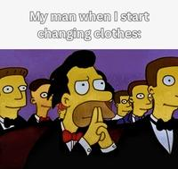
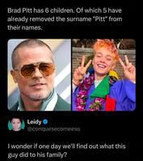
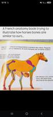

Researchers developed an ultrasonic espresso process that uses high-frequency sound waves instead of hot water to produce espresso-strength coffee at room temperature. And, not only did coffee drinkers find it comparable to traditional espresso, but the brewing process cut energy use by up to 75%. An anonymous reader quotes a report from The Conversation: We have developed what we call an ultrasonic espresso: a room-temperature brewing process that uses high-frequency sound waves to extract the flavor, oils, aroma and caffeine from coffee grounds. The result is an espresso-strength coffee made in under three minutes, but needing far less energy than the conventional method. Saving up to 75% of energy by not heating the water is a minor benefit for home users or small coffee shops. But for companies making ready-to-drink coffee products at industrial scale, it could be very significant indeed. A concentrated room-temperature coffee could be used directly in bottled drinks, milk-based beverages or cold coffee products. It can also be shipped as a concentrate and diluted later. This would reduce not only energy use, but potentially processing time as well.
The key to the new process is ultrasound. These are sound waves above the range of human hearing. In our system, a small metal device called a transducer presses against the side of a traditional espresso basket and makes it vibrate rapidly. Those vibrations move through the water and coffee grounds. This creates a phenomenon known as acoustic cavitation. Tiny bubbles form and collapse in the liquid. When these bubbles collapse near coffee particles, they produce microscopic jets and forces that act a little like scrubbing brushes. They pit and fracture the surface of the coffee grounds, helping flavor compounds, oils and caffeine move into the water much faster than they normally would at room temperature. In other words, ultrasound helps us replace heat with mechanical energy.
[...] In earlier work, we used ultrasound to speed up cold brew dramatically. But the challenge in this project was different: could we produce something with the strength, body and intensity of espresso, without heating the water? To do that, we adjusted several variables. Brew ratio was one of the most important: how much water we used for each gram of coffee. Too much water and the drink becomes diluted; too little and extraction becomes difficult. Grind size also mattered. Finer grounds allowed us to extract flavor more rapidly. Finally, we tested how long the ultrasound should be applied. We found the sweet spot was about two-and-a-half to three minutes. Of course, making a concentrated coffee in the laboratory is one thing. The real test is whether people want to drink it. [...] For the espresso samples, participants could not reliably tell the traditional and ultrasonic versions apart. There were no significant differences in aroma, flavor, bitterness or overall liking. For filter coffee, the ultrasound version was actually preferred overall, with participants rating its bitterness more pleasantly.
Read more of this story at Slashdot.
Amazon MGM has dropped Luca Guadagnino's nearly completed Sam Altman biopic Artificial and is seeking another distributor for the film. The move comes months after Amazon expanded its multibillion-dollar partnership with OpenAI, fueling speculation about a potential conflict given the movie's reportedly unflattering portrayal of Altman. The Independent reports: Artificial would have marked the Oscar-nominated Call Me By Your Name director's third Amazon film, following the critically acclaimed Zendaya-led tennis romance Challengers (2024) and the academic scandal drama After the Hunt (2025), starring Julia Roberts. The new movie is said to chronicle the brief period when Altman was abruptly ousted as OpenAI's CEO in 2023 and subsequently rehired. Monica Barbaro and Ike Barinholtz star alongside Garfield as former OpenAI CTO Mira Murati and SpaceX founder Elon Musk, while Yura Borisov, Cooper Hoffman, Jason Schwartzman, Cooper Koch, Billie Lourd, Zosia Mamet, Angus Imrie, Chris O'Dowd, Mark Rylance and Margo's Got Money Troubles breakout Thaddea Graham round out the cast.
It is unclear exactly why the film was dropped, but according to Variety, the news came after it had already undergone positive screen tests. An early viewer told the publication that the film's portrayals of Altman and newly minted trillionaire Musk are the two characters audiences would "like the least." It was also reported that Amazon had already seen every early iteration of the script before Guadagnino was hired to direct. Altman and Amazon founder Jeff Bezos have developed a high-profile friendship over the years. In fact, the former was in attendance at Bezos's wedding to Lauren Sanchez, which took place in Venice, Italy, in 2025. In recent months, the two have continued to deepen their professional partnership that began in 2015, when Amazon became one of OpenAI's first investors. Ten years later, the companies closed their first major deal in November 2025, allowing the ChatGPT maker to run its systems on Amazon's U.S. data centers.
Read more of this story at Slashdot.
An anonymous reader quotes a report from Wired: A report from Canada's Transportation Safety Board has highlighted regulatory failures that allowed OceanGate's unregistered, unflagged, and uncertified Titan submersible to operate out St. John's, Newfoundland, for years before it imploded on a tourist trip to the wreck of the Titanic in 2023. "When it came to the Titan, critical information existed across multiple federal government organizations, but no one was responsible for connecting the dots," says TBS chair Yoan Marier in a statement. "Without a complete picture of the operation, the Titan continued to operate in Canada without regulatory oversight." [...] As OceanGate continued to operate from St. John's in 2021 and 2022, the Titan made successful dives to the Titanic and several sites within Canadian waters. The company eventually interacted with a total of 10 Canadian federal agencies, including Parks Canada, the Department of National Defense, and the Royal Canadian Mounted Police. But the company's operations were never directly reported to the team responsible for marine safety. "In terms of the actual people that were responsible for marine oversight, their focus was on the Canadian support vessel," says TSB investigator Jason Melvin.
While TSB investigators did not have access to the wreckage of the Titan itself, which remains with the US Coast Guard, they did analyze portions of the carbon fiber left over from its manufacture. They calculated that a hull made to OceanGate's exact specifications might have been able to make hundreds of millions of dives to Titanic depths before failing. However, the composite samples as built had porosity and waviness between layers and were ground down in a way that might have introduced defects. When the TSB tested the compressive strength of the carbon fiber, it indicated the material could fail in as few as 30 deep dives. [...] The TSB is recommending increased oversight of the riskiest vessels and improvements in information sharing between departments, and is requiring that all human-occupied submersibles be subject to international construction and safety standards.
Read more of this story at Slashdot.
An anonymous reader quotes a report from Wired: The Trump administration's move to impose export controls on Anthropic's most powerful AI technology followed a spat over the company granting South Korean telecom giant SK Telecom access to its Claude Mythos model, according to people familiar with the matter. US officials were concerned about what they alleged were SK Telecom's ties to China, those people said. Those concerns appear to have compounded when Amazon later flagged vulnerabilities to the White House it identified in Fable 5, a highly safeguarded version of Mythos that Anthropic released to the public on June 9. The Amazon researchers claimed that it was possible to circumvent some of Fable 5's guardrails and access Mythos' formidable cybercapabilities, though Anthropic and outside cybersecurity experts have argued these risks are not unique to Claude.
The confluence of events is what ultimately led the White House to determine that it could not trust Anthropic to safeguard its most advanced AI technology, according to a person close to the administration. On Friday, the Trump administration ordered Anthropic to revoke access to Mythos and Fable 5 for all foreign nationals, including immigrants inside the US. Rather than gate access to its technology based on nationality, a process that would be difficult to implement while also preserving privacy, Anthropic decided it was better to disable access to the models entirely. The White House and Anthropic still remain at odds after days of negotiations about bringing Claude Mythos and Fable 5 back online. SK Telecom was one of roughly 150 organizations granted early access to Anthropic's vulnerability-detection model Claude Mythos through Project Glasswing, notes Wired. The White House later asked Anthropic to revoke the company's access, reportedly amid concerns about alleged China ties, and Anthropic immediately complied. There was, however, no mention of the telecom in the government's formal demand to restrict Mythos and Fable 5 to U.S. nationals.
SK Telecom told a Korean newspaper that the "anonymous insider's remarks in foreign media lack verified facts, and our company has no ties to China."
Read more of this story at Slashdot.
Longtime Slashdot reader schwit1 shares a report from Reuters: Meta has lobbied the U.S. Congress for legal immunity from child-harm claims tied to social media products such as Instagram, as it faces thousands of lawsuits from young users and their families, according to a source familiar with the matter and proposed legislative language reviewed by Reuters. If adopted by lawmakers and passed into law as part of the Kids Online Safety Act (KOSA) under consideration in the U.S. Senate, such a provision could undermine thousands of lawsuits against Meta and other online platforms over harms to children. Meta and Google's YouTube face a combined $6 million in damages after they lost the first case at trial early this year. While legislators have given no indication of adopting the language, the lobbying effort shows the kind of legal protections Meta is seeking amid the biggest attempt to regulate online platforms in the U.S. since the 1990s. Meta has reportedly proposed the language in exchange for dropping its opposition to KOSA. Under the law, platforms would be required to mitigate harms to minors tied to features such as infinite scrolling, notifications, and appearance-altering filters.
Read more of this story at Slashdot.
NASA has selected Relativity Space to build and launch Aeolus, a 2028 Mars orbiter that would provide daily global measurements of dust, winds, and atmospheric temperatures to support future robotic and human missions. TechCrunch reports: The structure of the contract is akin to the deals that NASA made with SpaceX to fly cargo to the International Space Station, or Firefly Aerospace to put a lander on the Moon. The government agency handles the science, while the private company provides low-cost infrastructure. Aeolus, as the mission is dubbed, will contain four instruments to measure and image Mars from orbit, providing what NASA expects to be the first daily, global view of dust, winds, and temperature in its atmosphere. The agency said that data will make it safer for landers and, someday, astronauts, to visit the surface of the Red Planet.
By pairing NASA's world-class instruments with commercial innovation and investment, we can deliver more science, more often, and reduce the time it takes to get essential data into the hands of researchers preparing for future human missions to Mars," NASA administrator Jared Isaacman said in statement. The mission is set to launch in 2028 -- a rapid pace that will require Relativity to design and build the spacecraft to carry the Aeolus instruments, and finish building the rocket that will carry it to space, all on a tight timeline. NASA did not disclose how much it is paying Relativity for the mission, and Relativity did not respond to questions from TechCrunch.
Relativity was founded in 2015 by two former SpaceX and Blue Origin engineers, with the idea of using 3D printing to its maximum potential as a path to building a cheaper rocket. The company's first design, Terran-1, launched in March 2023 and failed mid-flight. Relativity doubled down by moving on to a larger design, dubbed the Terran R. Before Relativity could get it to the launch pad, the company ran into fundraising challenges, and Schmidt took a majority stake in the company in it last year, installing himself as CEO. He's been tight-lipped about the investment but has expressed interest in orbital data centers, and is thought to be using Relativity to launch a space telescope, Lazuili, financed by his family philanthropy, Schmidt Sciences.
Read more of this story at Slashdot.
Rolls-Royce SMR has secured a multibillion-pound agreement to build three small modular reactors on Sweden's west coast, "marking a major step in the British engineering group's ambition to become a leading supplier of the technology in Europe," reports Euronews. From the report: Following a rigorous selection process that started in 2022, UK engineering giant Rolls-Royce's nuclear division, Rolls-Royce SMR, won the contract to build nuclear reactors for Sweden. As part of the deal, the group, selected by Videberg Kraft as its partner, will deliver three Small Modular Reactors (SMRs) to Sweden's west coast, at the Varo Peninsula. "The Videberg Project will build Sweden's first new nuclear power plant in more than forty years, supporting industries and households in southern Sweden," a press statement from Rolls-Royce said. The partnership with utility Vattenfall and developer Karnfull Next is seen as one of the most advanced opportunities for deployment outside of the UK.
[...] The European Commission considers small modular reactors (SMRs) to be a promising low-carbon technology that could help support the bloc's clean energy and energy security goals. In order to remove regulatory barriers, the EU's SMR strategy was adopted in March 2026 to accelerate the development and deployment of the technology across Europe. SMRs are smaller than conventional nuclear power plants, typically generating between 20 and 300 megawatts of electricity. At the upper end of that range, a reactor could produce around 7.2 million kilowatt-hours of electricity per day -- enough to power hundreds of thousands of homes. The International Energy Agency (IEA) estimates that more than 1,000 small modular reactors could be deployed worldwide by 2050 under a supportive policy scenario, requiring cumulative investment of around $670 billion.
Read more of this story at Slashdot.
An anonymous reader quotes a report from The Guardian: In May, the federal government announced without warning that it would take apart a network of ocean monitoring systems that it had spent over $350 million to build. No reason was given for the decision to shut down the Ocean Observatories Initiative (OOI), but suspicion immediately focused on the network's role in tracking climate change. But the OOI also provides data that's useful for weather forecasting and fisheries management, leading to widespread opposition. Today, it appears that the opposition has won, as the government will announce that it's reversing the decision. The big remaining question is how much damage the OOI took during the intervening month.
[...] The OOI is a federally supported resource that provides ocean data for use by academic researchers, government planners, and private companies. It consists of arrays of monitoring systems in several locations in both the Atlantic and Pacific Oceans that can track things like currents, salinity, chemical levels, temperatures, and tectonic activity. (There are over 100 individual entries on the page that display the data gathered by the system.) Obviously, there are many potential uses of that data. The fact that it has been gathered continuously for a decade means it can help track changes in how carbon dioxide and heat enter the oceans. This is probably what made it a target for the climate change denialists who helped set the Trump administration's policy.
Those policymakers are perfectly happy to annoy people with environmental concerns, but they apparently neglected to consider how upset everyone else would be about losing access to the other data. The ensuing public backlash led the Senate on Wednesday to unanimously agree with a measure that would block the government from taking down the OOI. Today's decision may indicate that the administration recognized it had gotten itself into a fight it knew it was losing. The National Science Foundation formally announced the decision, stating: "effective immediately, [it] will not proceed with further removal or descoping of equipment from the remaining arrays and will continue operations including planned maintenance." The agency added that it "appreciates the concerns raised by the range of stakeholders that have informed us they rely on data" from the OOI.
The NSF also said it would "issue a Dear Colleague Letter to collect input from stakeholders and convene an expert panel to assess observational needs, evaluate available data sources, consider responses ... and help the agency identify a sustainable path for NSF's ocean observing systems."
Read more of this story at Slashdot.
An anonymous reader quotes a report from NPR: Student loan borrowers who enroll in automatic payments will get a much bigger discount on interest starting July 1, the U.S. Department of Education says. Auto pay has long offered a modest discount off borrowers' interest rate -- .25 percentage points -- but after millions of borrowers opted out during the long COVID repayment pause, with some making no payments for years, the nation's student debt portfolio swelled to $1.7 trillion. On Thursday, the department said it will temporarily increase its auto pay interest rate discount to one full percentage point. Practically, that means an undergraduate borrower with a loan at the current 6.39% would see their interest rate drop temporarily to 5.39%. The rate cut will last for two years, from July 1, 2026 through June 30, 2028. Borrowers already enrolled in auto pay do not need to act. They will automatically receive the rate cut. [...] The department says borrowers will have until Sept. 30 to sign up for auto pay and qualify for the two-year interest discount.
Read more of this story at Slashdot.
Three Amazon employees have filed a civil-rights complaint alleging the company retaliated against them for publicly supporting Seattle regulations on data centers. "The complaint was filed on the workers' behalf by Amazon Employees for Climate Justice, an independent group of corporate employees at Amazon that since 2018 has organized around climate issues," reports The New York Times. "It said the company started investigations and told the employees that they could face discipline, in one case up to potential termination, in an act of intimidation that violated the city's civil rights protections against discrimination for political beliefs." Amazon says it launched the internal investigations to determine whether the employees appeared to be speaking on the company's behalf rather than as private citizens. "As we looked more closely at how these employees represented themselves, and how their comments were received by others, it became clear that they may have been speaking in their capacity as Amazonians and not as private citizens," said an Amazon spokesperson. They said that the company does not allow retaliatory behavior and that when the investigation is concluded, Amazon "may or may not take action based on what we find." The New York Times reports: Five Amazon tech workers affiliated with Amazon Employees for Climate Justice testified at several different hearings before the Seattle City Council and two of its committees. Their testimony in the company's hometown drew national attention, and it put the tech giant in the awkward position of responding to public criticism of data centers and artificial intelligence from its own employees. Patrick Schloesser, who has worked as a software engineer at Amazon Web Services since 2020, said in an interview with The New York Times that Amazon told him he was under investigation last week, when he was called into a meeting with no notice. He had testified at two City Council hearings in early June. "I had this rising sense of anger that Amazon is attempting to infringe on my rights to speak out politically in my city," he said. "If we allow corporations to decide which speech is or is not allowed, that absolutely hurts democracy." [...]
[...] The Amazon employees testified that Seattle should consider conditions on allowing new data centers, such as requiring new renewable energy sources of power, banning the use of nondisclosure agreements between the city and developers, and limiting public subsidies. They offered to help create new rules based on their experience as tech workers. "Seattle needs to set the terms so the way any new data centers get built here actually moves us closer to the future we want," Darius Irani, who has worked as a software engineer in Amazon's grocery business since 2021, said at a June 3 hearing before the Council's Parks and City Light Committee. He suggested requiring public reporting of water and power use, banning shell companies and harnessing the heat emitted from the chips in data centers to warm nearby buildings.
Amazon told news organizations at the time that it respected 'our colleagues' right to voice their opinions and that the company did not have plans to build data centers within the city limits. On June 9, the Council unanimously voted for a one-year moratorium on new, large data centers in order to give it time to develop regulations. The next day, an Amazon employee relations staff member met the three workers in individual meetings and told them that they were under investigation for their testimony, according to the complaint. Mr. Irani said he was repeatedly questioned about his testimony and who else at Amazon was present at the hearings. "It feels like they say one thing publicly and try to silence and intimidate me privately, which I think is wrong," Mr. Irani said.
Read more of this story at Slashdot.
Norway will largely prohibit generative AI use for elementary kids ages 6 to 13 beginning with the new school year, while allowing limited, teacher-supervised use for older students. The government says the restrictions are intended to prevent children from skipping foundational reading, writing, and mathematics skills amid declining test scores. Reuters reports: Facing a broad decline in education test scores, the government in 2024 banned smartphones from schools and has given teachers back more powers to enforce discipline in the classroom. Using AI increases the risk that young children skip important steps in their education, Prime Minister Jonas Gahr Stoere told a press conference on Friday. "The most important thing in school is that our children learn to read, write and do mathematics," Stoere said, adding that the new standards will be imposed from the new school year beginning in late August.
Pupils from first through seventh grade, aged 6 to 13, should as a general rule not be using AI, while those in lower secondary school, aged 14 to 16, can cautiously adopt tools under teachers' supervision, the government said. In upper secondary education, from ages 17 to 19, students should learn to use AI appropriately so that they are prepared for further education and work, it added. In a related statement, the Norwegian government also said it would propose legislation to fund the use of more books in classrooms, reversing the trend towards computer tablets.
Read more of this story at Slashdot.
Video game composer and sound designer Bobby Prince has died at age 81 following an illness. Developer id software shared the news. Engadget reports: Prince was perhaps best known for his pioneering work on the Doom series. The Library of Congress inducted his soundtrack for the original game into the National Recording Registry just last month. "Despite the limitations of the 1993-era sound card drivers, Prince composed the perfect riff-shredding accompaniment for the game's demon-slaying journey to hell and back," the Library of Congress stated.
"Taking advantage of his knowledge of MIDI, Prince even worked to ensure that the sound effects he created could cut through the music by assigning them to different MIDI frequencies." Prince also worked on games such as Wolfenstein 3D, Rise of the Triad and Duke Nukem 3D. In 2006, the Game Audio Network Guild honored Prince with a lifetime achievement award.
Read more of this story at Slashdot.
Hyundai Motor Group is acquiring SoftBank's remaining 9.65% stake in Boston Dynamics for $325 million, "closing out SoftBank's last piece of Boston Dynamics and turning the Waltham, Massachusetts robotics company into a wholly owned Hyundai business," reports Startup Fortune. From the report: The price is $325 million for the remaining stake, according to the deal terms, and it follows the put option SoftBank retained when Hyundai bought control of Boston Dynamics in 2021. You should read that as a signal, not a footnote. Hyundai paid about $880 million for an 80% stake in Boston Dynamics in the 2021 transaction, valuing the company at roughly $1.1 billion at the time. SoftBank had bought Boston Dynamics from Alphabet in 2017, after Google had acquired the robotics lab in 2013. It was a strange ownership path for a company whose robots became famous on YouTube long before they became obvious commercial products.
That part is changing. At CES in Las Vegas on January 5, 2026, Hyundai and Boston Dynamics showed the electric Atlas humanoid robot in public, with the Associated Press reporting that the life-sized robot stood up, walked around the stage and was remotely piloted for the demonstration. The useful detail was not the stagecraft. It was the deployment plan. A production version of Atlas is expected to begin work at Hyundai's electric vehicle plant near Savannah, Georgia, by 2028. [...] If Hyundai can turn that into repeatable manufacturing value, the SoftBank exit will look less like a tidy cleanup and more like the moment Hyundai stopped borrowing a robotics future and decided to own it outright.
Read more of this story at Slashdot.
Researchers have disclosed a new unpatchable BootROM exploit affecting Apple devices with A12, A13, S4, and S5 chips. The attack requires physical USB access and DFU mode, but can let an attacker run code before iOS loads, bypass signature checks, and boot modified software. 9to5Mac reports the details: In a highly detailed technical post published today, the Paradigm Shift Team details usbliter8, a new exploit that "leverages both a hardware bug in the USB controller and a specific configuration flaw present in the device firmware" and cannot be patched. The PS Team explains that ahead of today's disclosure, it shared its findings and worked with Apple Product Security to coordinate the release. The researchers also thanked Apple's security team for its "prompt response, constructive engagement, and cooperation throughout" the process.
In a nutshell, this bug affects the following Apple SoCs: A12, S4, S5, and A13. [...] They add that "technical support for A12X/Z is possible," but "it is not currently implemented." That could add the 2018 and 2020 iPad Pro lineups to the list. The way usbliter8 works is: it sends specially crafted data to a device over USB while it is in DFU mode, confusing the USB controller and causing it to write data to the wrong part of memory. That gives an attacker with physical access to the device control over its startup process. From there, they can run their own code before iOS loads, bypass signature checks, and boot modified system software.
Importantly, the exploit does not affect or compromise the device's Secure Enclave, which in practice means that data such as passcodes and encrypted user data remain secure. That said, PS Team says that "although usbliter8 doesn't affect SEP itself, it opens up wider attack vectors to compromise the Secure Enclave," adding that "by releasing this exploit publicly, we hope to highlight the real-world impact of these hardware flaws and contribute to a broader understanding of modern SecureROM security." [...] Given that this is also an unpatchable exploit, the researchers note that "affected users should be aware that migrating to newer hardware remains the most effective mitigation."
Read more of this story at Slashdot.
The European Commission is reportedly preparing to provisionally classify Amazon Web Services and Microsoft Azure as "gatekeepers" under the Digital Markets Act, bringing cloud infrastructure under the law's stricter competition rules for the first time. The designation could require greater interoperability and data portability, making it easier for customers to switch providers, with a final decision expected by the end of 2026. Heise reports: This investigation began in November 2025, when the EU targeted the cloud power of US tech giants. The trigger was outages in cloud services with sometimes significant impacts on other internet services. Shortly before, an approximately 15-hour outage of the AWS cloud in the US meant that not only Amazon's own streaming services but also Atlassian, Docker, Epic Games, and the Signal messenger were unavailable or severely restricted. Shortly thereafter, Microsoft Azure also struggled with an outage, preventing air passengers from checking in and interrupting votes in the Scottish Parliament.
As a result, European antitrust authorities have also scrutinized cloud services under the Digital Markets Act for the first time. The major cloud providers, primarily from the US, have so far evaded the EU's Digital Markets Act because a large part of their business is handled through corporate contracts. This makes it difficult to determine the number of individual users. However, this is one of the EU's most important criteria for determining the market power of companies. [...] As gatekeepers, AWS and Azure would be obliged to ensure interoperability and data portability. This would, for example, simplify switching cloud providers and allow customers to link other services with AWS or Azure clouds, instead of being limited to AWS and Azure offerings. Significant fines could also be imposed if the cloud services are found to be in violation of existing regulations.
Read more of this story at Slashdot.
Nikita Ostrovsky / Time : A look at Russia's push to develop homegrown AI talent, as the country is hampered by scarce access to AI hardware and a brain drain of top technical talent — Nikita Ostrovsky … In early April, on a stage in the southwestern outskirts of Moscow, a moderator at Russia's annual Data …
Mishal Husain / Bloomberg : Q&A with Signal's Meredith Whittaker on why online child safety efforts risk mass surveillance, leaving the markets that demand weakening of encryption, more — Meredith Whittaker has spent years arguing that privacy is a prerequisite for a free society.
Financial Times : Sources: the UK government is expected to consult as early as this month on rules to make public service news more prominent on social media and video platforms — Move expected in British government green paper would set stage for fresh battle with Big Tech over online misinformation
Wall Street Journal : Sources: PC makers, including HP, are in talks with their supply-chain partners about using CXMT's memory chips in products bound for Asia as DRAM prices soar — Prices soar because capacity isn't growing quickly, while China option is limited by national-security concerns
Anna Heim / TechCrunch : Paris-based Kyber, which develops a low-latency remote device control SDK and is founded by VLC lead developer Jean-Baptiste Kempf, raised $5M led by Lightspeed — You've probably used VLC Media Player, the free video player with the orange traffic-cone icon — it's been downloaded more than 6 billion times.
Financial Times : Sources: Bain Capital stands to make $15B+ in profits on its 2018 Kioxia buyout, a ~20x return, as Kioxia's stock has surged 5,000%+ since its December 2024 IPO — Bain Capital stands to pocket profits of $15bn on 2018 buyout of Kioxia, the former Toshiba Memory
Tyler Cowen / Conversations with Tyler : An interview with Roblox CEO Dave Baszucki on his early decision not to prioritize ad revenue, whether every mega platform becomes an everything app, and more — Dave Baszucki is co-founder and CEO of Roblox, the user-generated gaming platform where all the games are built by the community itself.
Ben Schoon / 9to5Google : Nothing co-founder Akis Evangelidis says the phonemaker won't launch a new phone this year in its budget-focused CMF Phone series due to surging memory prices — Nothing's CMF Phone series has released two models thus far and, at least for now, won't be getting a third …
Naga Avan-Nomayo / The Block : DOJ says two brothers pleaded guilty to robbing a Minnesota family of $8M+ in cryptocurrency after holding them at gunpoint for over eight hours in 2025 — Quick Take — Two brothers pleaded guilty to robbing a Minnesota family of more than $8 million in cryptocurrency after holding …
Reuters : Sources: Abu Dhabi's MGX is exploring buying Singapore-based data center operator DayOne; last month, sources said DayOne planned a US IPO at a $20B valuation — Abu Dhabi-backed artificial intelligence investor MGX has been exploring buying Singapore-based data centre operator DayOne …
Erin Woo / The Information : Docs: OpenAI burned through $3.7B in Q1, on revenue of $5.7B, and ended the quarter with $73B+ in cash and marketable securities vs. $40B at the end of December — OpenAI burned through $3.7 billion in the first quarter, more than half its $5.7 billion in revenue, according to documents the company shared with shareholders.
Bloomberg : The departure of John Jumper, a key member of Google's AI coding development team, further strains Google's efforts to compete with Anthropic and OpenAI — Google DeepMind Vice President John Jumper, who won the 2024 Nobel Prize in chemistry for his work on artificial intelligence, is leaving the company to join Anthropic PBC.
Reuters : South Korean media: Hyundai plans to buy SoftBank's remaining 9.65% stake in Boston Dynamics for $325M to make the US robotics company a wholly owned subsidiary — Hyundai Motor Group plans to buy SoftBank Group's (9984.T) remaining 9.65% stake in Boston Dynamics for $325 million …
Maria Curi / Axios : Trump says he saw Anthropic last week as a national security threat, but signals relations have since improved because Dario Amodei was “nice” and “smart” at G7 — President Trump reached the point last week of viewing Anthropic as a national security threat …
Samantha Kelly / Bloomberg : Oura Ring 5 review: impressive thinness, live activity tracking, and conversational AI, but not very durable, LEDs are distracting, and the app is confusing — People who already own one of the company's older models have less of a reason to upgrade to the $399 device. — The Oura Ring 5 is the best smart ring yet.